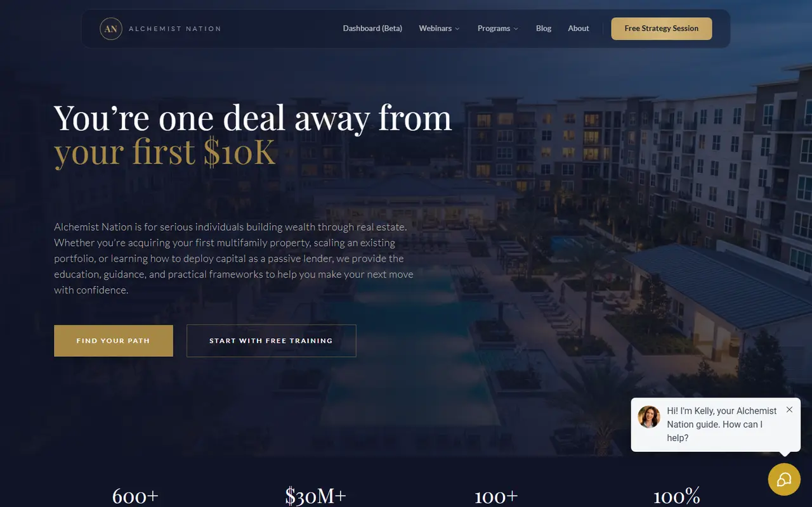

01 / Real Estate Education
Alchemist Nation
A membership business that runs on mentorship, live summits and an income fund. The site has to explain the programmes, sell the events and move visitors into a strategy call without feeling like a sales page.
- Web design
- Programme pages
- Event promotion
- Social creative